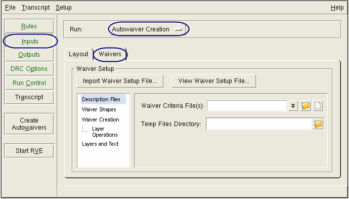

You can use Calibre
Interactive to generate a waiver shape database for the Calibre
Auto-Waivers flow. All the waiver setup parameters are controlled
through Calibre Interactive, then the waiver_flow tool is used to
create the waiver database. The waiver cells file defines the cells from
which waivers are generated and the rule checks to waive.
All
settings on the Waivers tab of the Inputs
pane are saved to the runset (see “About Calibre Interactive Runsets”). If you have a runset loaded
with desired settings, you can skip to the end of the following
procedure.
Tip Calibre RVE can
also be used to create a waiver database. Calibre RVE is often preferable
to using the waiver_flow tool because individual results can be
waived while you examine the result database. Only the waived results
are exported to the waiver database. See “Waiver Shape Generation with Calibre RVE” in the Calibre Auto-Waivers
User’s and Reference Manual for more information.
Procedure
- Click Rules on
the left panel of Calibre Interactive and specify the rule file
and run directory.
- Click Inputs on
the left panel of Calibre Interactive and specify information for
the layout database on the Layout tab. The
layout format must be GDSII or OASIS for Calibre Auto-Waivers.
- Choose a run type of “Autowaiver
Creation” in the dropdown list.
The label of the Run button
on the left panel changes to Create Autowaivers.
- (Optional)
Specify the name of the generated waiver setup file.
A waiver setup file is generated by Calibre Interactive
based on the GUI parameters and named _waiver_setup_ by
default. To specify a different file name, choose ,
click the Misc tab, enable the option “Specify
waiver setup file name,” and specify the file name.
- Click the Waivers tab
on the Inputs pane; a view of the Waivers tab
is shown in Figure 1 for Calibre Interactive nmDRC.
Figure 1. Waivers Tab for Waiver
Creation
- (Optional) If you have a waiver
setup file already created and want to use it for waiver shape generation,
click the Import Waiver Setup File button
and select the file. This populates the GUI fields with the values
in the selected waiver setup file; only GUI settings specified in
the imported file are overwritten.
Use the following steps to
confirm that the imported waiver setup parameters are correct. The
waiver setup parameter that corresponds to the GUI control is given
in parentheses.
- Specify the Waiver Criteria
File(s) in the Description Files pane (see Figure 1). Click the
 button
to edit the file in a text editor. See “Waiver Setup File Format for Waiver Generation” in the Calibre Auto-Waivers
User’s and Reference Manual for complete information. (WAIVER_CRITERIA)
button
to edit the file in a text editor. See “Waiver Setup File Format for Waiver Generation” in the Calibre Auto-Waivers
User’s and Reference Manual for complete information. (WAIVER_CRITERIA)
- (Optional) Specify the directory
for temporary files in the Temp Files Directory field. The default
is the working directory. (TMP_DIR)
- Choose the category Waiver
Shapes and specify the waiver shape file.
- Specify a merged or standalone
waiver database:
Merge waivers
with existing design ON —
Embed waiver shapes in the design specified on the Layout tab
on the Inputs pane. (MERGE YES)
Merge
waivers with existing design OFF —
Create a waiver database that contains only waiver geometry. (MERGE
NO)
- Specify the name of the output
waiver database file in the External waiver File(s) field. This
entry is optional—the default output waiver database filename is waived.gds.
(WAIVER_DATABASE)
- (Optional) Select the setting
for “Use rule file precision”:
This setting controls how waiver
shape precision and magnification is handled if the rule file precision
differs from the layout database precision; it has no effect if
the precisions are the same. See “Waiver Cell Precision and Magnification Considerations” in the Calibre
Auto-Waivers User’s and Reference Manual for details. (PRECISION_CONVERSION)
- Choose the Waiver
Creation category and specify settings for the following
options:
Waiver Cell File(s) —
Specify one or more Waiver Cell files. Click the button
to open the Edit Waiver Cells File dialog box; you can create a
waiver cells file by entering a new filename, then clicking . Select “Set IP_MATCH for added
cell” to automatically enable IP_MATCH when adding new cells. See
“Waiver Cells File Format” in the Calibre Auto-Waivers User’s and
Reference Manual for complete information. (WAIVER_CELLS)
Summary File —
Specify a name for the waiver summary report file. The summary file
is always created and named waiver.summary by
default if you do not specify a filename. (WAIVER_SUMMARY)
Text Magnification —
Specify a magnification factor for texts written during waiver creation
(waiver_flow). Text magnification only applies when the output format
is GDS. The default is 0.005. (TEXT_MAG)
Magnify Text Spacing —
Magnify the spacing between text written during waiver creation;
this only applies when the output format is GDS. The magnification
level specified for the “Text Magnification” option is used; the
default of 0.005 is used if “Text Magnification” is not specified.
(MAGNIFY_TEXT_SPACING)
Place waiver cells in intermediate cells —
Place waiver cells in intermediate cells instead of the parent cell.
See the section “Intermediate Container Cells” in the Calibre Auto-Waivers User’s
and Reference Manual. (ADD_WAIVER_HIERARCHY)
- Choose the category
in the navigation panel, and specify active and inactive layer operations.
(NOT IGNORE and IGNORE)
Also see the section “SVRF Command Support” in the Calibre Auto-Waivers User’s and Reference
Manual.
- Choose the Layers
and Text category and specify layer numbers and datatypes
for the waiver shapes and text annotations, if desired.
- (Optional) Click the View
Waiver Setup File button to view the waiver setup parameters.
You can choose to save the file.
- (Optional) Choose to
save the runset.
- Click the Create
Autowaivers button on the left panel to create new waivers.
This step runs the waiver_flow tool
with the specified parameters.
Results
The following files are created:
Waiver setup file —
A waiver setup file is generated by Calibre Interactive based on the
GUI parameters and named _waiver_setup_ unless
you specified a different filename in Step 4.
The RULE_FILE, WORKING_DIRECTORY,
INPUT_LIBRARY, and LAYOUT_SYSTEM parameters are taken from the GUI
settings on the Rules pane and the Layout tab
of the Inputs pane.
Waiver shape file —
The filename is given on the Waiver Shapes pane, or waived.gds by
default.
Waiver summary file —
The filename is given on the Waiver Creation pane, or waiver.summary by
default.
See “Generating Waivers with the waiver_flow Tool” and “Waiver Cell Description” in the Calibre Auto-Waivers User’s and
Reference Manual for complete information.